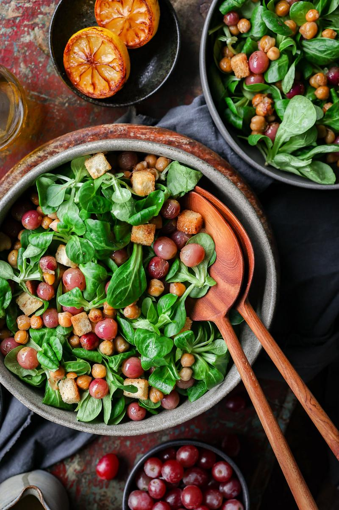

Caramelized Grape Salad
Ingredients
- Salad assembly
- ½ Tbsp (7 mL) vegetable oil
- 1½ cups (225 g) red grapes
- 1½ cups (246 g) cooked chickpeas
- ¼ tsp salt
- ½ Tbsp (7 mL) vegetable oil
- 1½ cups (45 g) croutons
- 6 cups (150 g) lamb's lettuce
- Charred lemon dressing
- 2 lemons
- 1½ Tbsp (22 mL) extra-virgin olive oil
- 1 Tbsp (15 mL) maple syrup
- ⅛ tsp salt
- 1 pinch ground black pepper
Directions
- Cut the lemons in half. Set aside.
- Bring a non-stick pan or cast iron to high heat.
Then add the lemon, cut-side down.
- Cook until deeply caramelized and browned, about 3 minutes.
Set aside to cool down slightly.
Clean the pan, then return to the heat.
- Add the oil, grapes, chickpeas, and salt. Cook until the chickpeas are golden and the grapes are
slightly
charred.
Meanwhile, juice and strain the lemons into a glass jar.
Add the remaining dressing ingredients to the
jar.
Close the jar and shake vigorously until the dressing has emulsified.
- Optionally, Add the oil and croutons to a pan on medium-high heat. Toast for 2 - 3 minutes so they
are
extra crisp and flavourful.
- Only when ready to serve, combine the lettuce, grapes, chickpeas and croutons in a large bowl.
Drizzle
over the dressing, and enjoy!
